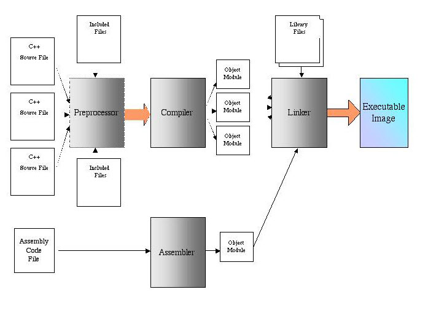
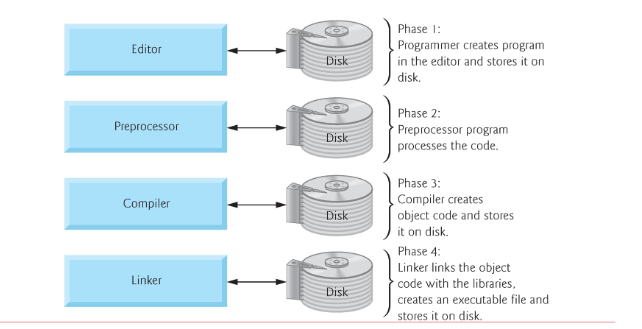
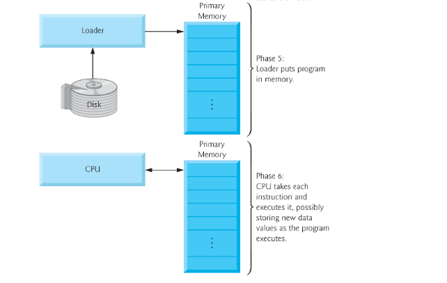

C program development phases
1) Editing the program
2) Preprocessing
3) Compiling
4) Linker
5) Loading
6) Execution
C adds a preprocessing step to the program creation process. The C preprocessor acts upon special instructions that can be contained in the C source code. These special preprocessor instructions are called preprocessor directives. These are #include, #ifndef, #define, and #endif.
The second item of interest is the assembly code file and assembler step shown at the bottom. Program routines can be created in other languages and compiled into object modules and then later linked with object modules created with C. This is often referred to as mixed-language programming.
Computers don’t understand C or any other programming language. They understand only machine language.
Three programs are used to translate your source code into an executable file that the computer can run. These programs are, in their order of appearance:
Preprocessor
Compiler
Linker

Preprocessor
The preprocessor is a program that scans the source code for preprocessor directives such as include directives. The preprocessor inserts into the source code all files included by the include directives.
In this example, the stdio standard library file is included by an include directive. Therefore, the preprocessor directive inserts the contents of that standard library file, including its definition of the printf object, into the source code file.
Compiler
The compiler is another program that translates the preprocessed source code (the source code after the insertions made by the preprocessor) into corresponding machine language instructions, which are stored in a separate file, called an object file, having an .obj extension. There are different compilers for different programming languages, but the purpose of the compiler is essentially the same, the translation of a programming language into machine language, no matter which programming language is involved.
The compiler can understand your code and translate it into machine language only if your code is in the proper syntax for that programming language. C, like other programming languages, and indeed most human languages, has rules for the spelling of words and for the grammar of statements. If there is a syntax error, then the compiler cannot translate your code into machine language instructions, and instead will call your attention to the syntax errors. Thus, in a sense, the compiler acts as a spell checker and grammar checker.
Linker
While the object file has machine language instructions, the computer cannot run the object file as a program. The reason is that C also needs to use another code library, called the run-time library, for common operations, such as the translation of keyboard input or the ability to interact with external hardware such as the monitor to display a message.
The linker is a third program that combines the object file with the necessary parts of the run-time library. The result is the creation of an executable file with an .exe extension. The computer runs this file to display “Hello World!” on the screen.
C program development phases
About C program development phases:
1) first you need to edit your code and save it in .c format .
2) Then you need to preprocess and compile a C program.
The programmer gives the command to compile the program. In a C system, a preprocessor program executes automatically before the compiler’s translation phase begins (so we call preprocessing phase 2 and compiling phase 3). The C preprocessor obeys commands called preprocessor directives, which indicate that certain manipulations are to be performed on the program before compilation. These manipulations usually include other text files to be compiled and perform various text replacements.
3) Then linking happens. C programs typically contain references to functions and data defined elsewhere, such as in the standard libraries or in the private libraries of groups of programmers working on a particular project. The object code produced by the C compiler typically contains “holes” due to these missing parts. A linker links the object code with the code for the missing functions to produce an executable image (with no missing pieces). If the program compiles and links correctly, an executable image is produced.
4) The next step is loading. called loading. Before a program can be executed, it must first be placed in memory. This is done by the loader, which takes the executable image from disk and transfers it to memory. Additional components from shared libraries that support the program are also loaded.
5) The final step is execution . Finally, the computer, under the control of its CPU, executes the program one instruction at a time.
Programs do not always work on the first try. Each of the preceding phases can fail because of various errors. For example, an executing program might attempt to divide by zero (an illegal operation for whole-number arithmetic in C). This would cause the C program to display an error message. If this occurs, you would have to return to phase-1 for editing, make the necessary corrections and proceed through the remaining phases again to determine that the corrections fix the problem(s).
Most programs in C input and/or output data. Certain C functions take their input from scanf , which is normally the keyboard, but scanf can be redirected to another device. Data is often output to printf , which is normally the computer screen, but printf can be redirected to another device. When we say that a program prints a result, we normally mean that the result is displayed on a screen. Data may be output to other devices, such as disks and hardcopy printers. There is also a standard error stream referred to as cerr. The cerr stream (normally connected to the screen) is used for displaying error messages. It is common for users to assign printf to a device other than the screen while keeping cerr assigned to the screen, so that normal outputs are separated from errors.


Type of Errors
There are can be some scenaries when something goes wrong .
You can have such types of error
- Compile (time)
- Runtime error
- Logic error
The first type of error ,it is when compilation of your program tooks a lot of time or you have syntax error ,which you need to fix .
The second type of error , when your program terminated immediately . It can be if you divided on zero , or allocated to the wrong memory adress or trying to access an element that does not exist in memory or you are using a lot of memory, an infinite loop or recursion problem, etc.
The last one type of error ,when your program works incorrectly and doesn't work as you want .